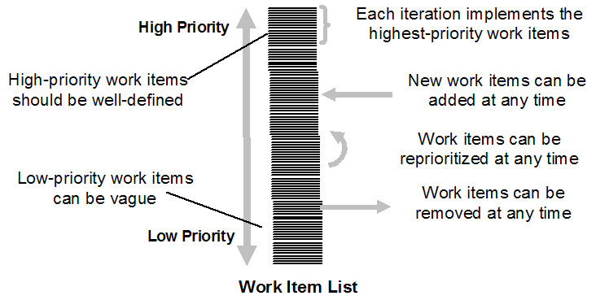

| Guideline: Work Items List |
 |
|
| Related Elements |
|---|
IntroductionThe Artifact: Work Items List captures all scheduled work to be done within the project, as well as proposed work that may affect the product. Some of the Work Items may be implemented in this project, some of them may be implemented in a future project, and some of them may never be implemented. Some of the work items may still be poorly defined, representing a big chunk of work requiring potentially several staff months of effort. As the priority of these work items increase, they are typically decomposed into smaller work items that represent specific and well-defined tasks that may take hours or days to address. In other cases, specific and well-defined work items are created directly, representing for example a defect to be addressed, see Figure 1.  Figure 1. Work Items List provides one prioritized list of scheduled and proposed work. A Work Item may represent work associated with a defect, enhancement request, use case, scenario, user story, supporting requirement, or anything else that captures a potential requirement or improvement to your system. A Work Item may reference any type of requirement, defect, enhancement request, or other useful information guiding you in what needs to be done. A big advantage with the Artifact: Work Items List is that it enables you to prioritize only one list containing all the things that may need to be addressed, whether the work item represent a work related to a requirement, enhancement, or defect. The one exception is that we separately prioritize the risk list. Nothing in the project will get done if not represented or mapped to a Work Item. This means that all requirements, defects and change requests have to at some stage be mapped to a work item. Also, a developer will not take on work that is not represented in a Work Item. Only Work Items needs to be prioritized. This also means that tracking Work Items are a primary means of understanding status of the project. There are two major types of Work Items:
Un-scheduled Work ItemsMost Work Items are initially un-scheduled, meaning that it has not yet been decided whether to do them, and when to do them. Unscheduled Work Items should always represent something meaningful to deliver to stakeholders, such a scenario to be detailed, designed, implemented and tested. You may consider capturing the following data for such Work Items:
Scheduled Work ItemsOnce a Work Item has been assigned to an iteration, it becomes scheduled. Note that we only assign Work Items to the current or next iteration. There is no point in assigning Work Items to a specific future iteration, since we cannot predict what a meaningful schedule will be more than an iteration in advance, see Guideline: Iteration Planning. The following additional attributes are useful for Scheduled Work Items:
This provides the information required to plan and manage an iteration. We can plan iterations by understanding effort involved and we can do Report: Iteration Burndown by tracking how much work is left. Work Items StatesWe have found the following states to be useful to track Work Items:
You may choose another set of states, based on your needs. |
| Concepts |
|---|
This program and the accompanying materials are made available under the View copyright information here: OpenUP Copyright |